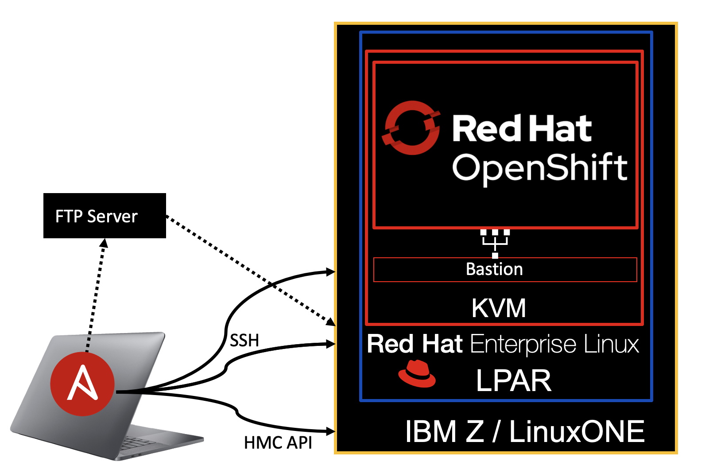

Ansible-Automated OpenShift Provisioning on KVM on IBM zSystems / LinuxONE#
Overview#
These Ansible Playbooks automate the setup and deployment of a Red Hat OpenShift Container Platform (RHOCP) cluster on IBM zSystems / LinuxONE with Kernel Virtual Machine (KVM) as the hypervisor.

Ready to Start?#
Use the left-hand panel to navigate the site. Start with the Before You Begin page.
Need Help?#
Contact Jacob Emery at jacob.emery@ibm.com